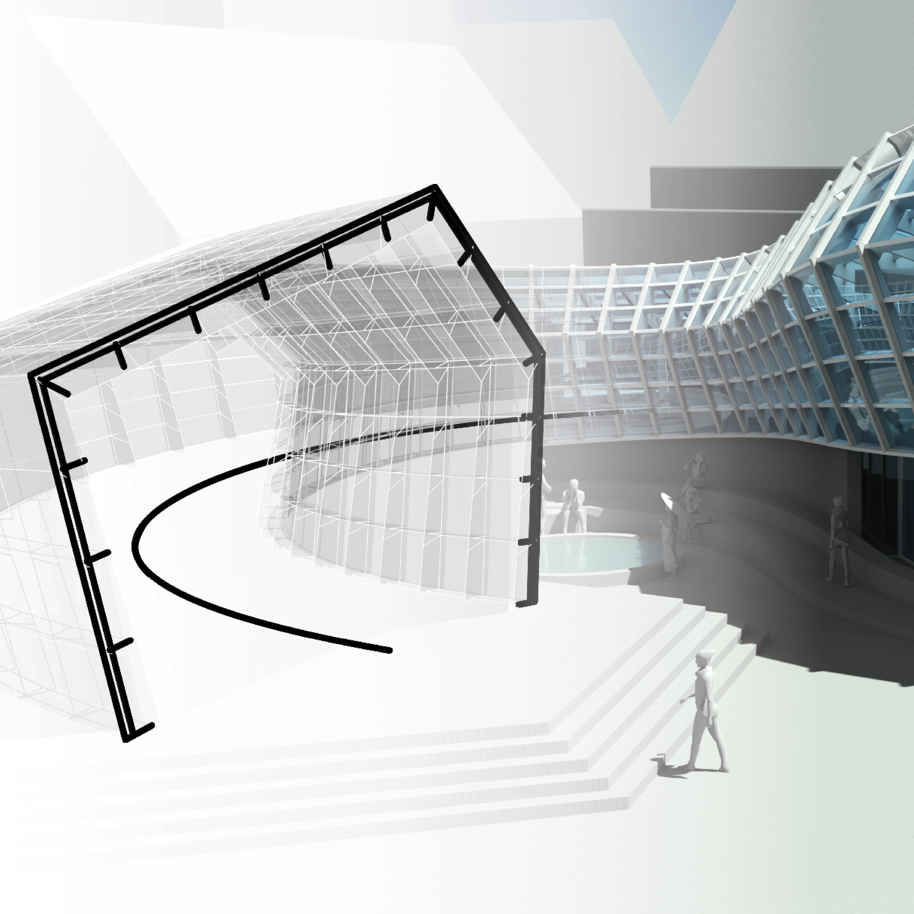
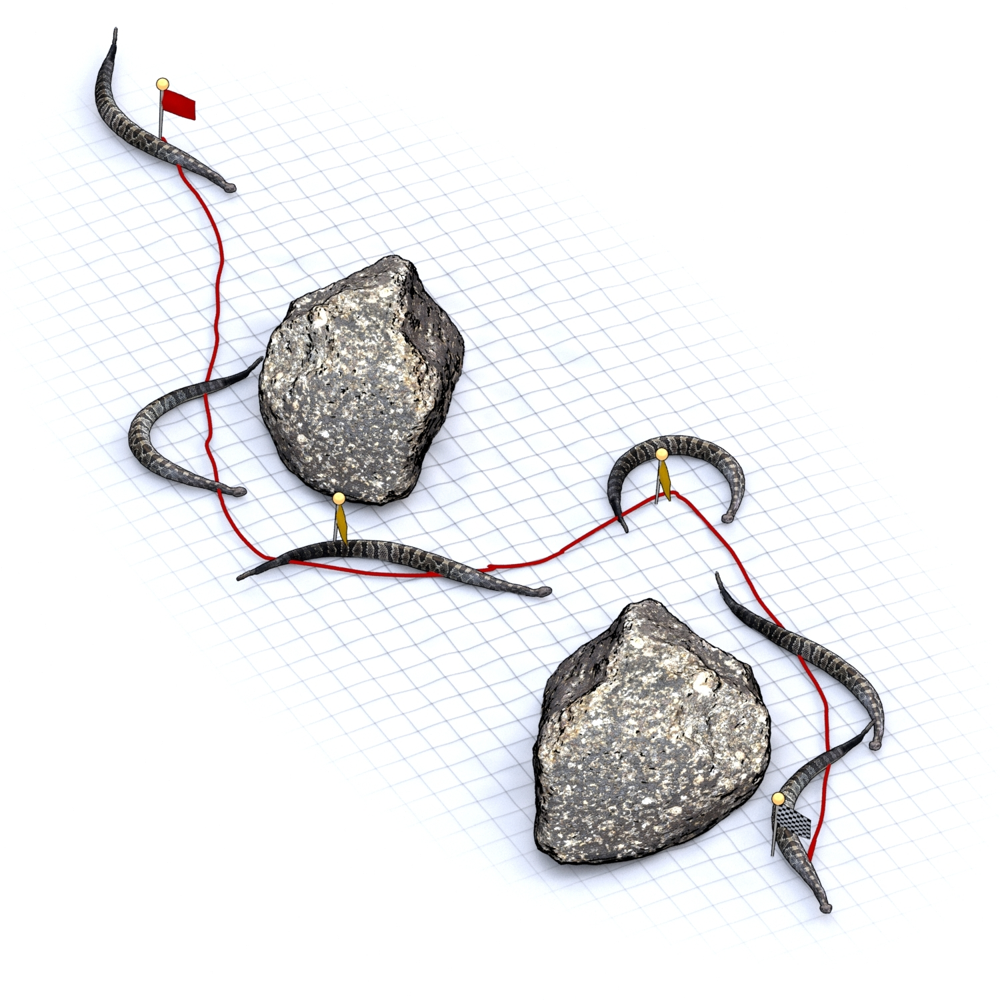
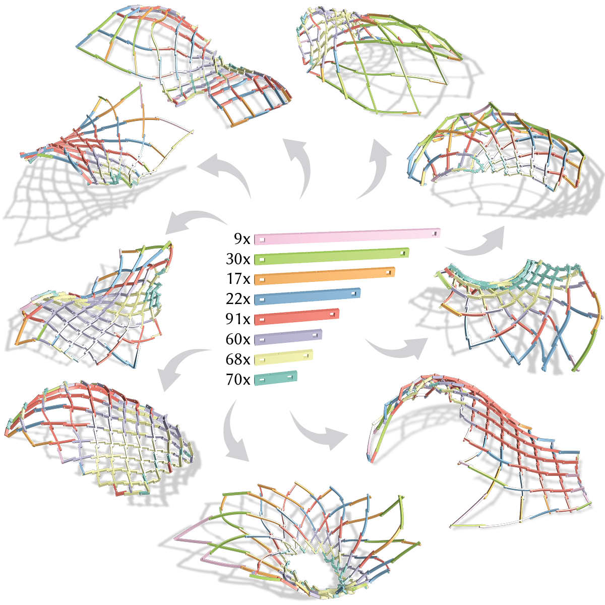
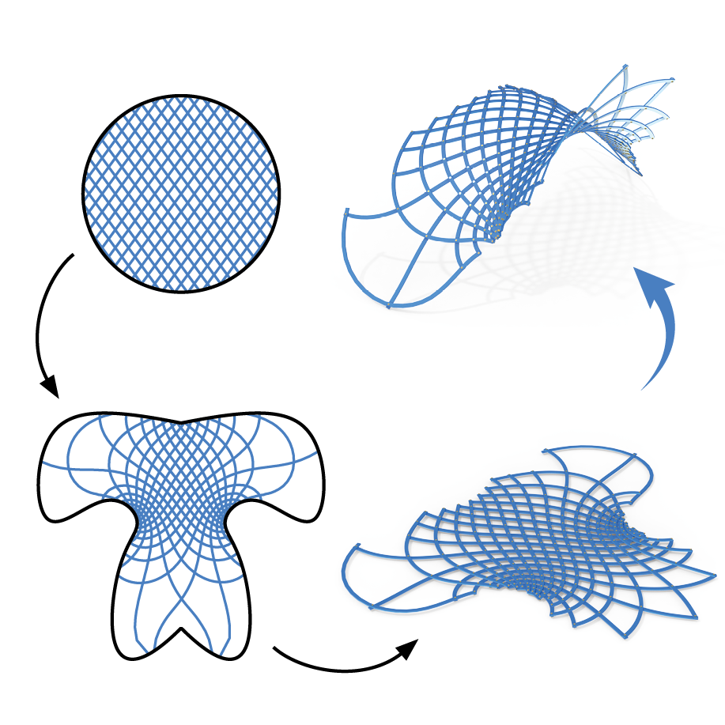
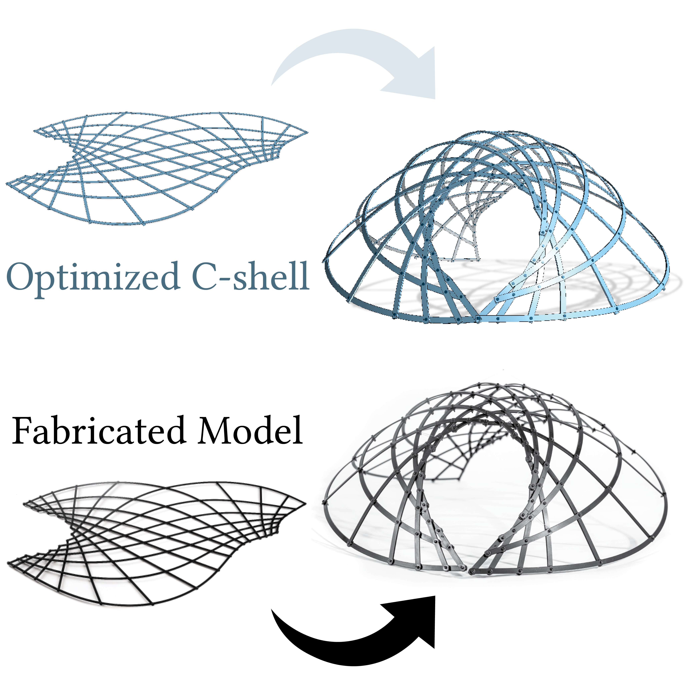

Publications

CNets: An Interactive Design Framework for Cone-Nets

Inverse Geometric Locomotion

C-Tubes: Design and Optimization of Tubular Structures Composed of Developable Strips

Computational Design of a Kit of Parts for Bending Active Structures

Interactive Design of C-shells Using Reduced Parametric Families

C-shells: Deployable Gridshells with Curved Beams

On Linear Interpolation in the Latent Space of Deep Generative Models